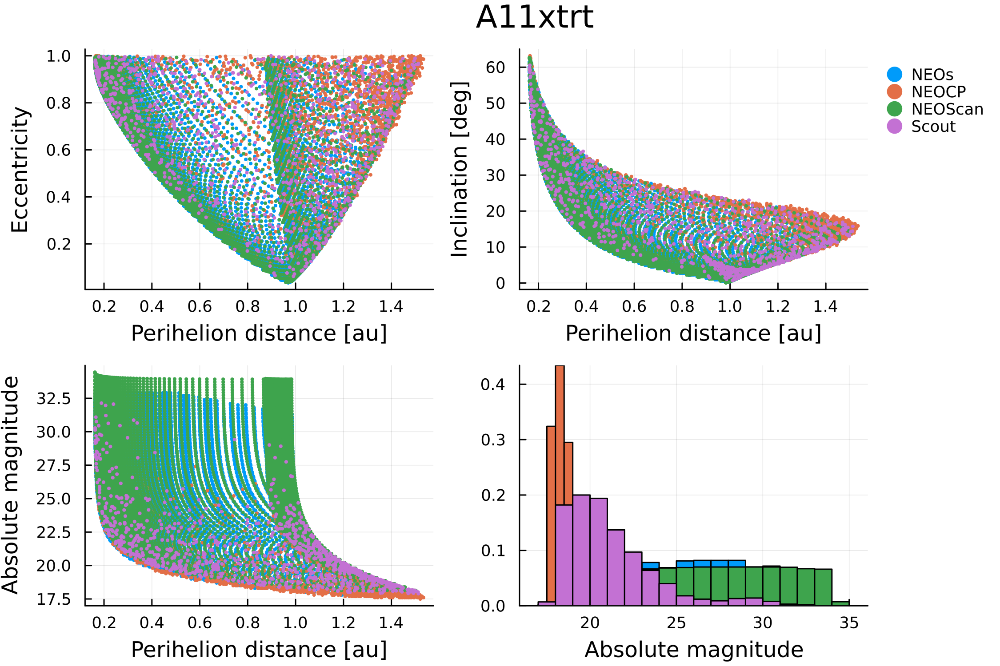
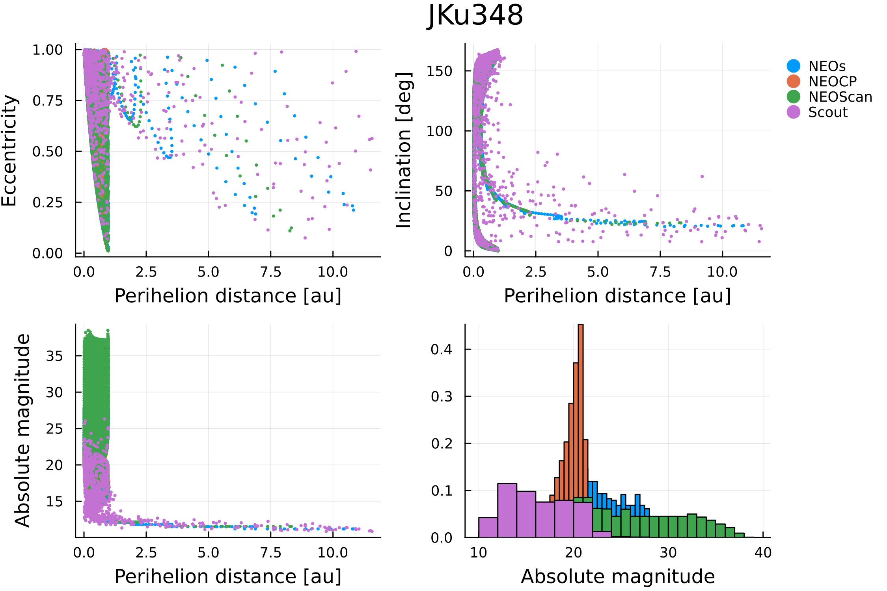
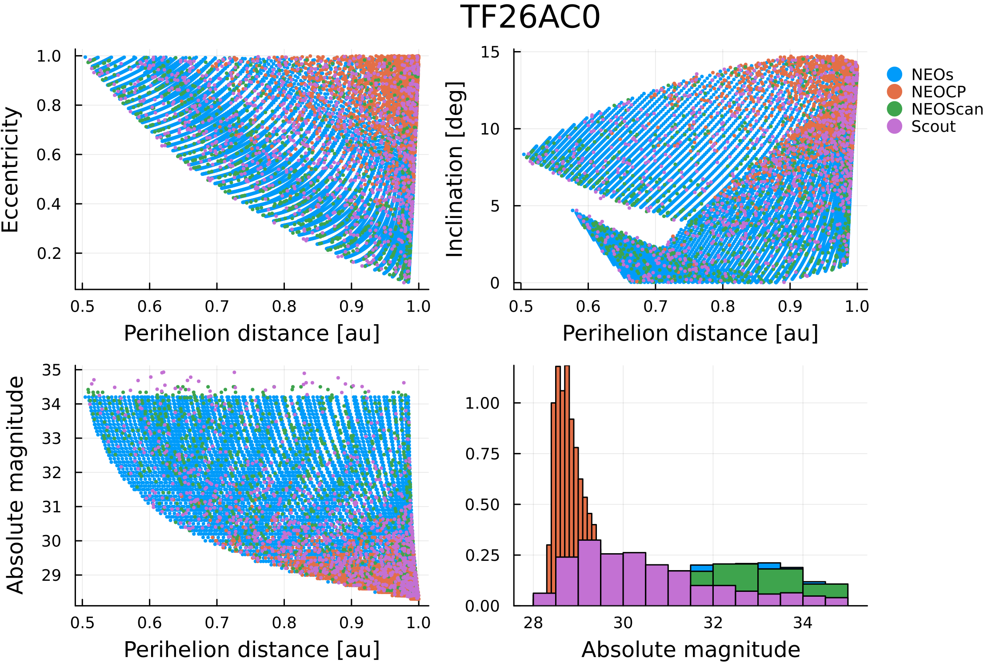
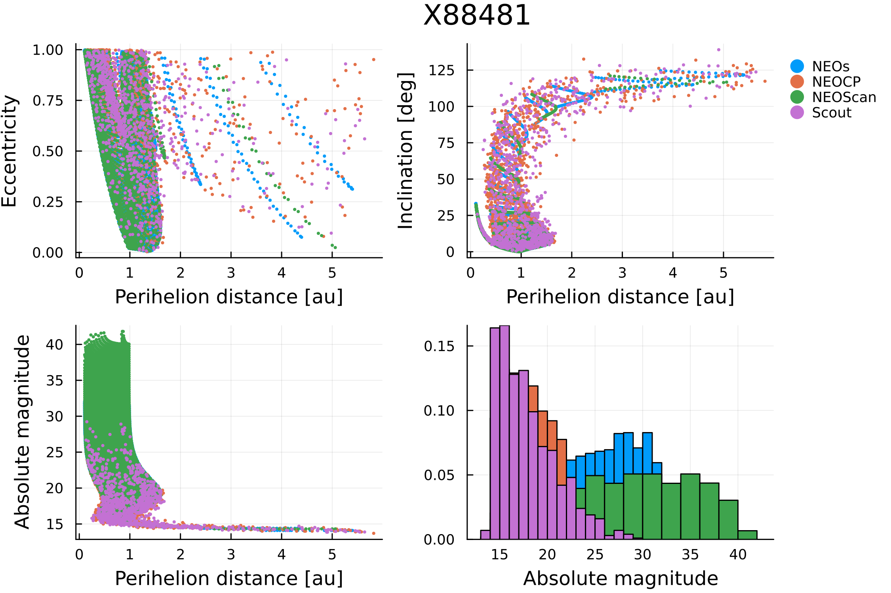

NEOCP
NEOs can be used to sample the manifold of variations of an object listed in the NEO Confirmation Page (NEOCP) in a similar way to how services like NEOScan (NEODyS) and Scout (JPL) do. In particular, the mcmov.jl script located in the scripts/neocp folder of the NEOs repository, implements the algorithm described by [12].
To run the aforementioned script, first activate the corresponding enviorment:
pkg> activate scripts/neocp
pkg> instantiateNext, use the following command to print a help message explaining all the argments that the script can receive:
julia --project=scripts/neocp scripts/neocp/mcmov.jl -hThe mcmov.jl script can leverage both distributed and multi-threaded paralellism to speed up the computations. We highly recommend at least using multiple threads to run the script.
Below, we illustrate the results obtained with the mcmov.jl script for four objects that were listed in the NEOCP on January 17th, 2025: A11xtrt, JKu348, TF26AC0 and X88481. These results can be reproduced by substituting the corresponding designation in the {} of the following command:
julia -t 5 --project=scripts/neocp scripts/neocp/mcmov.jl -i {} -o {}.txt -s log --Nx 100 --Ny 100 --maxchi 5.0 --refine --scout --neoscan --neocp



In the figures above, the main differences between NEOs, NEOCP, NEOScan and Scout are due to the sampling strategy. On one hand, both NEOs and NEOScan follow [12] and use a refined square grid. On the other hand, NEOCP uses a Markov Chain Monte Carlo algorithm to sample the manifold of variations, while Scout follows the systematic ranging approach described by [13].
References
- [12]
- Spoto, F., Del Vigna, A., Milani, A., Tommei, G., Tanga, P., Mignard, F., Carry, B., Thuillot, W. and David, P. Short arc orbit determination and imminent impactors in the Gaia era. Astronomy & Astrophysics 614, A27 (2018).
- [13]
- D. Farnocchia, S. Chesley and M. Micheli. Systematic ranging and late warning asteroid impacts. Icarus 258, 18–27 (2015).